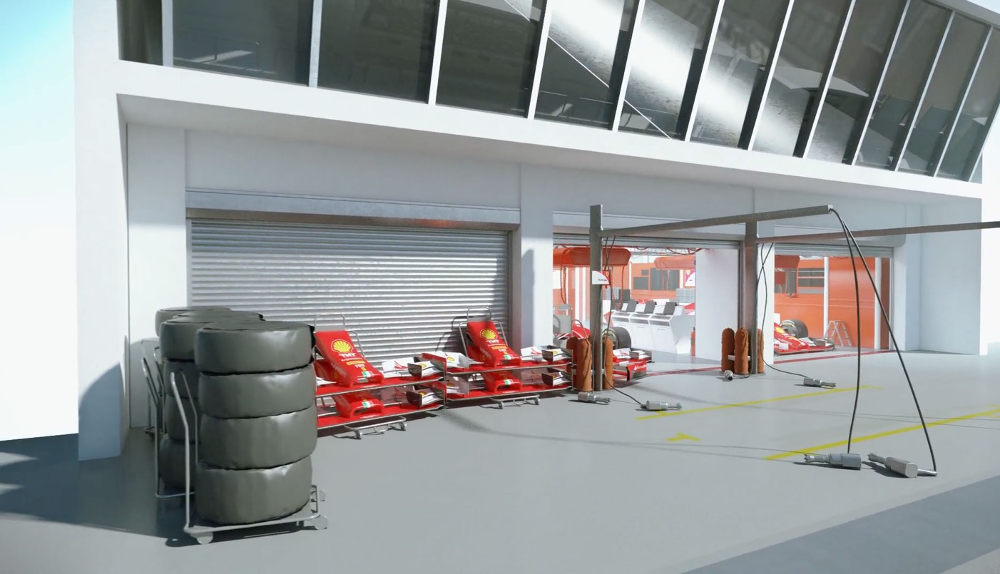
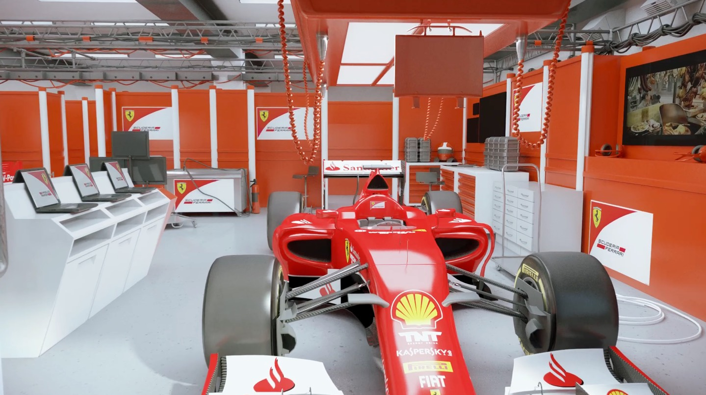
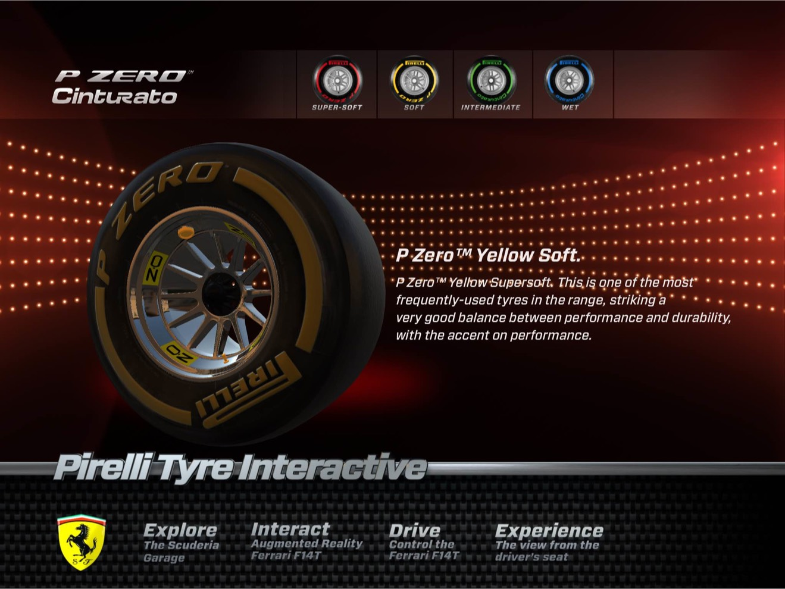

Ferrari Scuderia
The most famous team in the world make a visit to their F1 garage interactive as well as awe inspiring.

IMMERSE
Motorsport is a viseral experience, with noise, glamour and human endeavour.
Would you like us to build an application for that ?

AMAZE
We built a model of the Ferrari F14 T, the 2014 F1 car as well as the garage and additional race instrumentation
By optimizing the geometry we were able to run the model in realtime for a series of amazing augmented reality experiences. These included a marker generated 3D model that could be scaled using a pinch function, by touching the Shell logo on the nosecose a video screen then opened up above the rear spoiler.



In gyro mode you were able to sit in the position of a F1 pilote and toggle between view modes. Then we added a Pirelli Interactive tyre selector with a real tyre that can be rotated scaled and spun. Finally you could drive an augmented reality car using on screen controls, for first time users their first words were usually the same “AMAZING”.


